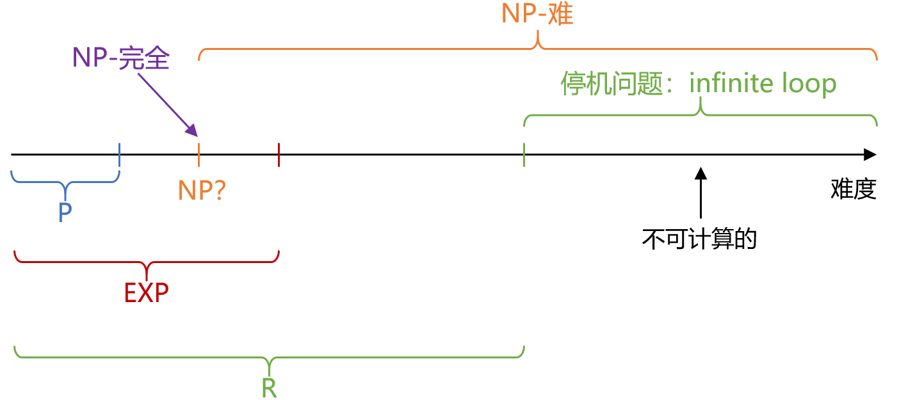
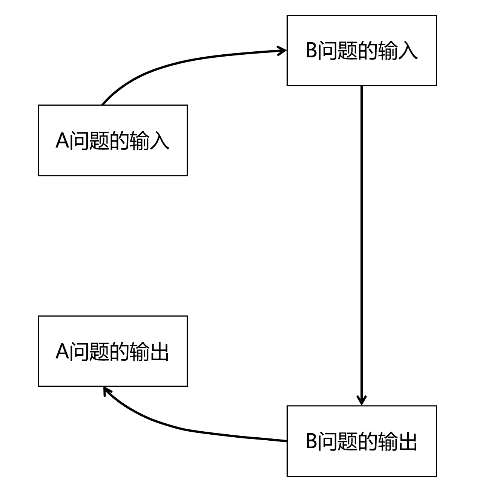
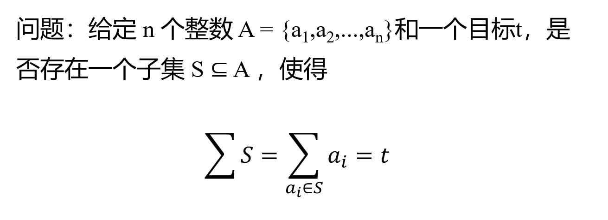
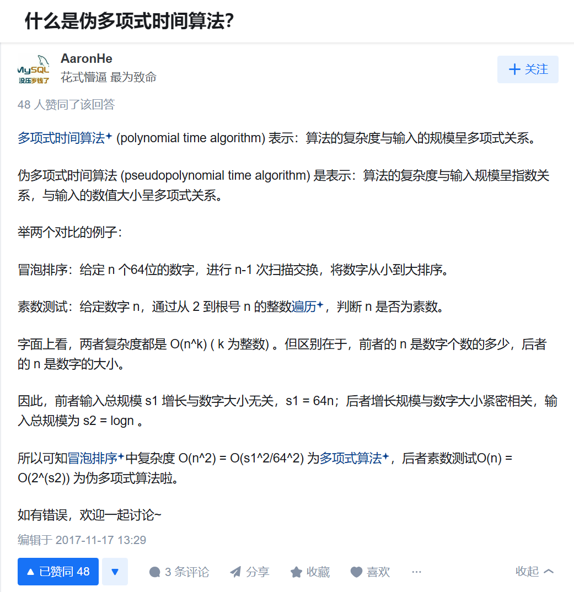
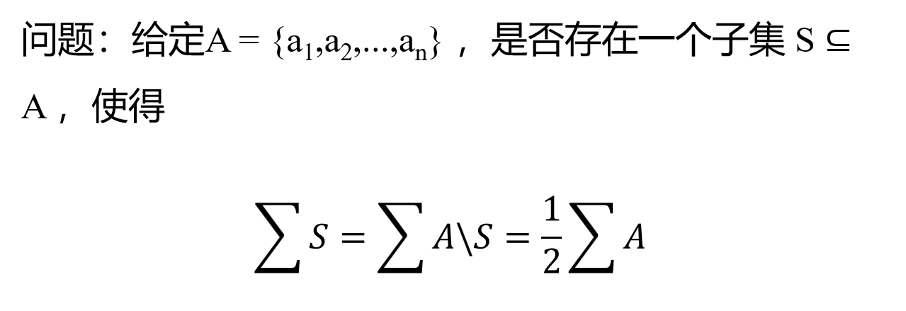
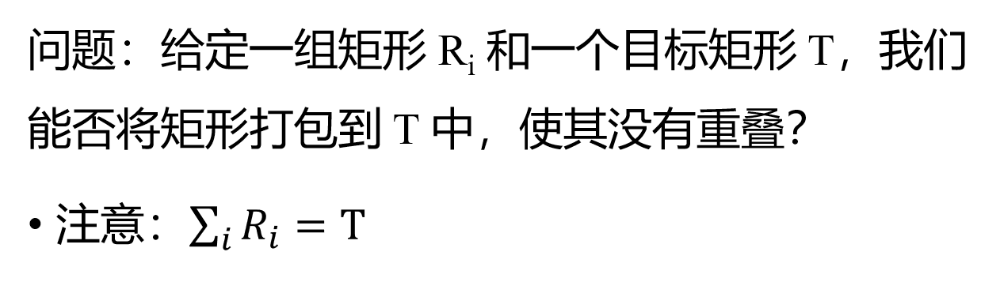

# Overview

证明一个问题是 NP 完全问题，分为两步：
- 该问题是 NP 问题
- 该问题是 NP-hard 问题
我们本节讨论的都是判断问题！！！
# 归约
如图，将 A 问题归约到 B 问题，B 问题更难
B 是大圈，A 是 B 的特殊情况
转换过程要求在多项式时间
举例：A 为解一元一次方程，B 为解二元一次方程
一般我们已有：3SAT 问题 —>3DM 问题
# 子集和问题

# 证明本问题是 NP 问题
首先这是一个伪多项式时间的问题，
关于伪多项式的解释：

# 证明本问题是 NP 难问题
我们基于 3DM 问题进行归约
先在此列一下 3DM 问题的具体内容：
给定不相交的集合、 和，每个集合有 个元素；给定一个三元组 ，是否存在一个子集，使得 中的每个元素 恰好在一个 中？
给你三个互不相交的集合，三个集合并起来成为 “全体元素”，
现在给你一个三元组的集合 T，三元组就是，就是从三个集合里各抽一个元素出来搓成一个团；T 里面好多这个种团
然后问你：我现在能不能从 T 里选出几个一个团，满足这些团并起来就是全体元素？也就是说所有元素一一对应不重复？
从 3DM 出发 ，T 的长度为
对于 T 种的每个元素，我们用独热编码思想，把 对应成一个 01 串（也就是一个 进制的数），整个数串长度为，除了从右往左第 位、 位、 位为 1，其余位为 0；那 对应的 进制数串的值为：，那么原集合 T 可对应集合
此时我们考虑 位全为 1 的数串的值，定义为 target，则
子集和问题的 A 即为 W，t 即为 target；归约完成，给定一写长 3n，包含 3 个 1 的数串，选一些加和，凑出一个长 3n，每位均为 1 的数串
为防止加和时出现进位，那么不妨取，这样计算 m 个三元组在某一位上均为 1，加起来也不会进位；这样如果数串和为 1，那么对应数位一定有且仅有一次被取到
一共多了 m 个 3n 位的 d 进制串，归约过程为多项式时间
（最后谈一嘴转换后的子集和问题有解时，该解对应 3DM 问题的解，即可）
# 分组问题

# 证明该问题是 NP 问题
对于一个作为答案的子集 S，计算其和；再计算 A 的和，即可除 2 验证是否为解，
# 证明本问题是 NP 难问题
我们基于子集和问题进行归约
设子集和问题中，集合之和为，然后我们再加入两个元素，，
此时 即为分组问题的集合，归约完成，子集和输入转化为分组问题输入
若此是分组问题有解，则 必不可能同时在答案子集中，否则其和至少为，已经超了总和 的一半
那 被划分为两半，一半和为 t 跟，一半和为 跟，则对应分组问题输出转化为子集和问题输出
转化中计算了长度为 n 的集合元素之和，构造了两个数，时间为多项式时间
# 矩阵打包问题

# 证明该问题是 NP 问题
显然，可以考虑一个一个矩形放进去进行验证，可在多项式时间解决
# 证明本问题是 NP 难问题
我们基于分组问题进行归约
将分组问题中， 看作矩阵较长的边，较短的边为单位 1；目标矩形长，宽为 2
归约完成
若此是矩阵打包问题有解，则必可按矩阵较长边之和平分为两列矩阵，单位 2 的宽度远小于任何一个矩形的较长边，防止了矩阵被旋转塞入
这样，矩阵打包问题的解即分组问题的解
转化中为长度为 n 的集合构造矩形，时间为多项式时间